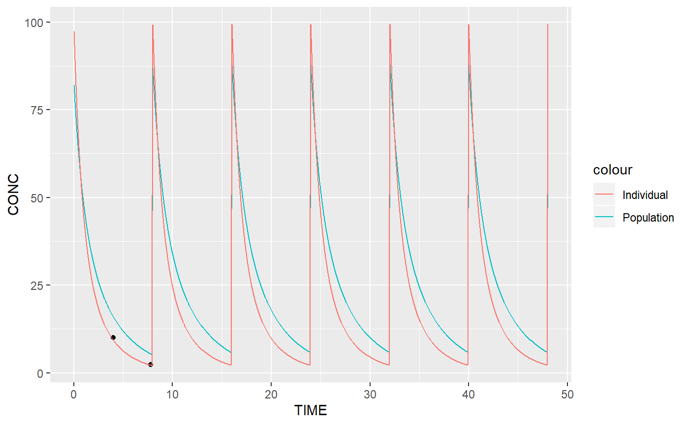

Standard ggplot
library(tdmore)
library(ggplot2)
m1 <- tdmore(meropenem_model)
regimen <- data.frame(AMT=2000, TIME=seq(0, 100, by=8))
population <- estimate(m1, regimen=regimen)
observed <- data.frame(TIME=c(4, 7.8), CONC=c(10, 2.4))
ipred <- estimate(m1, regimen=regimen, observed=observed)
ggplot(mapping=aes(x=TIME,y=CONC)) +
geom_point(data=observed) +
geom_line(aes(color="Population"), data=predict(population, newdata=seq(0, 48, by=0.1))) +
geom_line(aes(color="Individual"), data=predict(ipred, newdata=seq(0, 48, by=0.1)))
TDMore extensions ggplot
ggplot(ipred, mapping=aes(x=TIME,y=CONC)) +
geom_point() +
stat_predict(xlim=c(NA,NA)) +
stat_predict(xlim=c(NA,NA), tdmorefit=population)